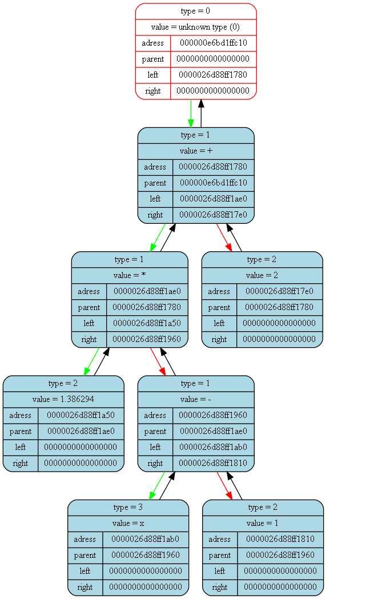
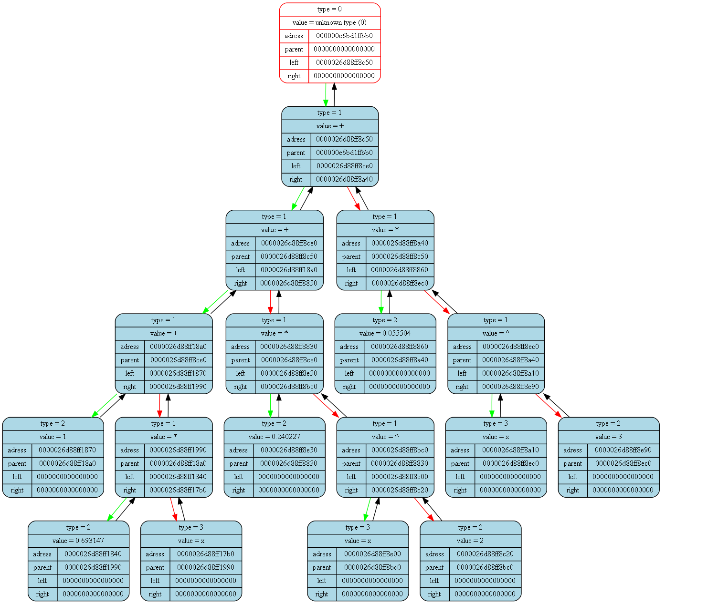

<pre>
<pre>

Tree dump from (int main()) at (main.cpp) at line (18):
tree [000000e6bd1ffd20] "&func_tree" at (int main()) at (main.cpp)(12):
{
	status   = 1
	error    = 0
	size     = 3

	((2)^(x))
}
<pre>

Tree dump from (int GeneratePdf(Tree_t*, double, int)) at (dif.cpp) at line (86):
tree [000000e6bd1ffc40] "&der_tree" at (int GeneratePdf(Tree_t*, double, int)) at (dif.cpp)(84):
{
	status   = 1
	error    = 0
	size     = 5

	((0.693147)*((2)^(x)))
}
<pre>

Tree dump from (int GeneratePdf(Tree_t*, double, int)) at (dif.cpp) at line (92):
tree [000000e6bd1ffbe0] "&slope_tree" at (int GeneratePdf(Tree_t*, double, int)) at (dif.cpp)(90):
{
	status   = 1
	error    = 0
	size     = 7

	(((1.386294)*((x)-(1)))+(2))
}
<pre>

Tree dump from (int GeneratePdf(Tree_t*, double, int)) at (dif.cpp) at line (98):
tree [000000e6bd1ffb80] "&taylor_tree" at (int GeneratePdf(Tree_t*, double, int)) at (dif.cpp)(96):
{
	status   = 1
	error    = 0
	size     = 17

	((((1)+((0.693147)*(x)))+((0.240227)*((x)^(2))))+((0.055504)*((x)^(3))))
}
